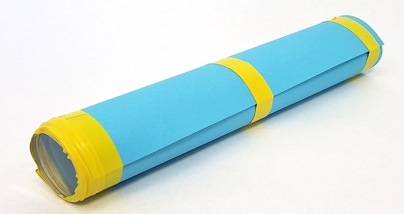

سرگرمی:
ایک دوربین بنائیں
خلاصہ:
- فعال وقت
10-20 منٹ
- کل پروجیکٹ کا وقت
10-20 منٹ
- بنیادی خیال
لینس، اضافہ
تعارف:
اپنی خود کی دوربین بنائیں جسے آپ اس تفریحی STEM سرگرمی میں دور دراز اشیاء کو دیکھنے کے لیے استعمال کر سکتے ہیں! اس سرگرمی میں آپ جس قسم کی دوربین بنائیں گے اسے مونوکولر یا اسپائی گلاس بھی کہا جاتا ہے۔
مواد:
- ڈبل محدب لینس، 38 ملی میٹر قطر، 500 ملی میٹر فوکل لمبائی
- ڈبل مقعر لینس، 38 ملی میٹر قطر، 150 ملی میٹر فوکل لمبائی
- کارڈ اسٹاک (2 ٹکڑے)
- قینچی
- ٹیپ
طریقہ کار
- ایک چھوٹے کنارے سے شروع کریں اور کارڈ اسٹاک کے ٹکڑوں میں سے ایک کو ایک ٹیوب میں رول کریں تاکہ ٹیوب کا بیرونی کنارہ مقعر کے عینک کے کنارے کے ساتھ اوپر ہوجائے۔ (8.5"×11" کارڈ اسٹاک کے ٹکڑے کے لیے، نتیجے میں آنے والی ٹیوب 8.5" لمبی ہونی چاہیے)۔
- لینس کو ٹیوب کے آخر تک ٹیپ کریں اور ٹیوب کو ایک ساتھ رکھنے کے لیے اضافی ٹیپ کا استعمال کریں۔ اختیاری طور پر، ٹیوب کے اس سرے کو کسی طرح سے نشان زد کریں (مثال کے طور پر، ایک نقطے یا چھوٹی آنکھ کھینچیں) تاکہ آپ یاد رکھ سکیں کہ یہ وہی اختتام ہے جسے آپ دیکھتے ہیں۔

- کارڈ اسٹاک کے دوسرے ٹکڑے کو ایک چھوٹے کنارے سے شروع کریں، تاکہ یہ پہلے ٹکڑے کے اندر فٹ ہوجائے۔ دوسری ٹیوب کے سرے کو محفوظ بنانے کے لیے ٹیپ کا ایک ٹکڑا استعمال کریں تاکہ یہ انرول نہ ہو۔ پہلی ٹیوب کے کھلے سرے کے اندر دوسری ٹیوب کو سلائیڈ کریں۔
- محدب لینس کو دوسری ٹیوب کے کھلے سرے پر ٹیپ کریں۔
- یہ آپ کے دوربین کی جانچ کرنے کا وقت ہے! اپنی دوربین کو دونوں ہاتھوں سے پکڑیں اور اسے دور کی کسی چیز (کمرے کے اس پار یا باہر کی چیز) پر نشانہ بنائیں۔ ایک آنکھ بند کریں اور دوسری آنکھ سے دوربین سے دیکھیں۔ اس بات کو یقینی بنائیں کہ آپ پہلی ٹیوب (مقعد لینس کے ساتھ) کے ذریعے دیکھ رہے ہیں۔ اگر ہر چیز بڑی کے بجائے چھوٹی نظر آتی ہے تو دوربین کو ادھر ادھر پلٹائیں۔
- اپنی دوربین کو فوکس کرنے کے لیے دوسری ٹیوب کو اندر اور باہر سلائیڈ کریں۔ فوکس کو ایڈجسٹ کرتے رہیں جب تک کہ دوربین کے ذریعے آپ کا نظارہ دھندلا نہ ہو۔
کیا دیکھتے ہو؟ صرف اپنی آنکھوں سے دیکھنے کے مقابلے میں جب آپ انہیں اپنی دوربین کے ذریعے دیکھتے ہیں تو اشیاء کتنی بڑی نظر آتی ہیں؟
سرگرمی:
کینڈی کور کے نمونے

خلاصہ:
- فعال وقت
10-20 منٹ
- کل پروجیکٹ کا وقت
10-20 منٹ
- بنیادی خیال
ارضیات، بنیادی نمونے۔
تعارف:
اس تفریحی سرگرمی میں ماہر ارضیات کی طرح کام کریں جب آپ بھوسے کا استعمال کرتے ہوئے کینڈی کی سلاخوں سے "بنیادی نمونے" ڈرلتے ہیں۔ کیا آپ صرف نمونے سے کینڈی بار کی قسم کی شناخت کر سکتے ہیں؟
مواد:
- مختلف قسم کی منی یا تفریحی سائز کی کینڈی بار۔ ٹھوس یا "سخت" چاکلیٹ سلاخوں جیسے Hershey® سلاخوں سے پرہیز کریں۔
- صاف پینے کے تنکے (بائیوڈیگریڈیبل/کمپوسٹیبل اسٹرا پلاسٹک کے تنکے سے زیادہ ماحول دوست ہیں!)
- قینچی
- چھوٹی پلیٹ
- کاغذ کے تولیے۔
تیاری کا کام:
یہ سرگرمی کینڈی سلاخوں کے ساتھ بہترین کام کرتی ہے جو کمرے کے درجہ حرارت پر یا اس سے کچھ زیادہ ہیں۔ اگر کینڈی کی سلاخیں بہت ٹھنڈی ہیں، تو ان کے ذریعے تنکے کو پھینکنا مشکل ہوگا، اور وہ ٹوٹ جائیں گے یا ٹوٹ جائیں گے۔ اگر وہ بہت گرم ہیں، تو وہ اسکویشی اور گوئ ہو جائیں گے، جس سے اچھا نمونہ حاصل کرنا مشکل ہو جائے گا۔ اگر ضروری ہو تو، اپنی کینڈی کی سلاخوں کا درجہ حرارت بڑھانے یا کم کرنے کے لیے مختصر طور پر کہیں رکھیں۔ مثال کے طور پر، آپ انہیں ٹھنڈا کرنے کے لیے چند منٹ کے لیے فریج میں رکھ سکتے ہیں یا انھیں گرم کرنے کے لیے دھوپ والی کھڑکی پر چھوڑ سکتے ہیں۔
طریقہ کار:
- کینڈی بار کو کھولیں اور اسے پلیٹ میں رکھیں۔
- احتیاط سے کینڈی بار کے اوپری حصے میں ایک تنکے کو کھینچیں۔
- اس بات کو یقینی بنائیں کہ آپ نے کینڈی بار کے نچلے حصے میں بھوسے کو پوری طرح پھینک دیا ہے۔ آپ کو بھوسے کو پوری طرح سے حاصل کرنے کے لیے اسے آہستہ سے موڑنے یا ہلانے کی ضرورت پڑسکتی ہے۔
- کینڈی بار سے بھوسے کو آہستہ سے باہر نکالیں۔
- بھوسے کے باہر کا حصہ صاف کرنے کے لیے کاغذ کا گیلا تولیہ استعمال کریں۔
کیا آپ کی کینڈی کے "بنیادی نمونے" میں انفرادی پرتیں نظر آتی ہیں؟

- اندر کینڈی کے بالکل اوپر تنکے کو کاٹنے کے لیے قینچی کا استعمال کریں۔
- . اپنے بنیادی نمونے کو کینڈی بار کے ریپر کے آگے رکھیں، تاکہ آپ اس بات پر نظر رکھ سکیں کہ یہ کس کینڈی بار سے آیا ہے۔
- کم از کم ایک دوسری قسم کی کینڈی بار کے لیے اقدامات 1–7 کو دہرائیں۔
- اپنے بنیادی نمونے ساتھ ساتھ رکھیں۔ (ہوشیار رہیں کہ کون سا ہے اس کا پتہ نہ لگائیں!)
آپ کے بنیادی نمونے ایک دوسرے سے کیسے مختلف ہیں؟ کیا ان میں سے کسی ایک جیسی پرتیں ہیں؟
- کسی دوست کو یہ بتائے بغیر کہ وہ کون سی کینڈی بار استعمال کرتے ہیں ایک بنیادی نمونہ لیں اور پھر آپ کو نمونہ دیں۔
کیا آپ دوسرے نمونوں سے اس کا موازنہ کرکے شناخت کر سکتے ہیں کہ کس قسم کی کینڈی بار کا نمونہ آیا ہے؟
سرگرمی:
: اسٹریچی بیلون سائنس
خلاصہ:
- فعال وقت
10-20 منٹ
- کل پروجیکٹ کا وقت
1 دن تک
- بنیادی خیال
لچکدار، درجہ حرارت
تعارف:
غبارے تفریحی ہوتے ہیں اور مختلف سائز، رنگوں اور شکلوں میں آتے ہیں جو انہیں سجاوٹ، واٹر پلے، ماڈلنگ اور دیگر تخلیقی سرگرمیوں کے لیے اچھی طرح سے موزوں بناتے ہیں۔ لیکن غبارے تفریح سے باہر بھی استعمال ہوتے ہیں۔ موسمی غبارے، رکاوٹوں والی شریانوں کو چوڑا کرنے کے لیے استعمال ہونے والے غبارے، اور نقل و حمل فراہم کرنے والے غبارے صرف چند مثالیں ہیں۔ پہلے غبارے جانوروں کے مثانے یا آنتوں سے بنے تھے۔ اس نے لیٹیکس، ربڑ، اور نایلان کے تانے بانے کے غبارے جو آج ہم دیکھتے ہیں، کے لیے راستہ بنایا۔ کیا آپ نے کبھی سوچا ہے کہ ان مواد کو غباروں کے لیے کیا چیز بہترین بناتی ہے؟ تلاش کرنے کے لیے سرگرمی آزمائیں!
مواد:
- نئے غبارے، سائز اور مواد میں ایک جیسے
- مستقل مارکر
- فریزر
- سیخ
- ہونٹ بام یا پیٹرولیم جیلی
تیاری کا کام:
- دو غباروں کو مستقل مارکر سے نشان زد کریں۔
- ۔ نشان زدہ دو غباروں کو فریزر میں کم از کم دو گھنٹے کے لیے ٹھنڈا کریں۔ دوسرے غبارے کو کمرے کے درجہ حرارت پر چھوڑ دیں۔
طریقہ کار:
- کمرے کے درجہ حرارت کا ایک غبارہ لیں اور اس میں ہوا کا ایک سانس اڑا دیں۔
خالی غبارے میں ہوا اڑانا کتنا مشکل ہے؟
- غبارے میں کچھ اور سانسیں اڑا دیں۔
کیا غبارے میں ہوا کو دھکیلنا آسان ہو رہا ہے یا مشکل؟ ایسا کیوں ہوگا؟
- ہوا کو غبارے سے نکلنے دیں اور جاری رکھنے سے پہلے کچھ گہرے سانس لیں۔
- فریزر سے ایک غبارہ نکالیں اور اس غبارے کے ساتھ پچھلے تین مراحل کو دہرائیں۔
ایک برفانی غبارے کو کمرے کے درجہ حرارت کے مقابلے میں اڑانا کتنا مشکل ہے؟
- منصفانہ موازنہ کرنے کے لیے، پچھلے مراحل کو دہرائیں، اب برف کے ٹھنڈے غبارے کو پہلے اور کمرے کے درجہ حرارت کے غبارے کو آخری ٹیسٹ کریں۔
کیا آپ کے نتائج بدلتے ہیں؟ ایک دوسرے سے زیادہ مشکل کیوں ہو گا؟
- کمرے کے درجہ حرارت کے غبارے میں سے ایک لے لیں جو آپ نے ابھی استعمال کیا ہے اور اسے اس وقت تک اڑا دیں جب تک کہ آپ کو ڈر نہ ہو کہ اگر آپ اس میں مزید ہوا اڑائیں گے تو یہ پھٹ جائے گا۔ ہوا کو فرار ہونے دو۔
- کمرے کے درجہ حرارت والے دو دیگر استعمال شدہ غباروں کے آگے ایک نیا غبارہ بچھا دیں۔
یہ تینوں خالی غبارے کن طریقوں سے ایک جیسے اور مختلف نظر آتے ہیں؟
- نوک سے شروع کرتے ہوئے سیخ پر کچھ ہونٹ بام رگڑیں۔
- . ایک غبارے (ان میں سے کوئی بھی ٹھیک ہے) کو تقریباً 2/3 مکمل ہونے تک اڑا دیں، اور اسے گرہ لگائیں تاکہ ہوا پھنس جائے۔
آپ کے خیال میں جب ہم سیخ کے ساتھ غبارہ پھینکیں گے تو کیا ہوگا؟
- اپنے اُڑے ہوئے غبارے کو دیکھیں۔
غبارے کو جلدی سے پھٹنے کے لیے آپ سیخ کو غبارے میں کہاں ڈالیں گے؟ آپ اس جگہ کا انتخاب کیوں کرتے ہیں؟ کیا آپ کو کوئی ایسی جگہ مل سکتی ہے جہاں آپ غبارے کو سیخ کے ساتھ پھونک پھونک کر باہر نکال سکیں؟
- اسے پاپ کرنے کے لیے غبارے کو پوک کریں۔
کیا یہ پاپ ہوا؟ آپ کو کیا لگتا ہے کہ پاپنگ غبارے کی تیز آواز پیدا ہوتی ہے؟
- ایک اور غبارے کو اس وقت تک فلائیٹ کریں جب تک کہ یہ تقریباً 2/3 بھر نہ جائے۔ اسے گرہ لگائیں اور اس کی جانچ کریں۔
اگر آپ کو اس غبارے میں سیخ کو پھیپھڑے بغیر ڈالنا پڑے تو آپ اسے کہاں ٹھونسیں گے؟
- اسے آزمائیں۔
کیا آپ کامیاب ہوئے؟
- یہ کام نہیں کرتا ہے، تو دوسرے بیلون کے ساتھ کوشش کریں. نوٹ کریں کہ گرہ یا اوپر کے قریب ربڑ کس طرح گہرا اور موٹا لگتا ہے۔ یہ اشارے ہیں کہ ربڑ اب بھی وہاں پھیلا ہوا ہے۔ اسے کچھ اور بار آزمائیں جب تک کہ آپ اپنے سیخ کو بغیر پھیپھڑے غبارے کے ذریعے کھینچنے میں کامیاب نہ ہو جائیں۔
آپ کو کیوں لگتا ہے کہ سیخ غبارے کو پھیپھڑے بغیر ان جگہوں پر غبارے میں داخل ہو سکتا ہے؟
سرگرمی:
آپ اپنے ہاتھ کتنی اچھی طرح دھوتے ہیں؟
خلاصہ:
تعارف:
آپ اپنے ہاتھ کتنی اچھی طرح دھوتے ہیں؟ کیا آپ انہیں صرف پانی سے جلدی سے کللا دیتے ہیں، یا آپ صابن استعمال کرتے ہیں؟ کیا آپ اپنے ہاتھوں کی پشت اور انگلیوں کے درمیان دھوتے ہیں؟ اچھی طرح سے ہاتھ دھونا جراثیم اور بیماریوں جیسے فلو اور عام سردی کے پھیلاؤ کو روکنے کے بہترین طریقوں میں سے ایک ہے۔ یہ جاننے کے لیے اس سرگرمی کو آزمائیں کہ آیا آپ کے ہاتھوں کے ایسے حصے ہیں جنہیں دھونا مشکل ہے جہاں جراثیم چھپے ہو سکتے ہیں!
مواد:
- ڈوبنا
- دھو سکتے پینٹ
- صابن
- ہاتھ تولیہ
طریقہ کار:
- اپنے دونوں ہاتھوں کو پینٹ میں ڈھانپیں، گویا آپ ہینڈ لوشن استعمال کر رہے ہیں۔ اپنے ہاتھوں کی پشت، اپنی انگلیوں کے درمیان اور اپنے ناخنوں کے گرد ڈھانپنا یقینی بنائیں۔
- اپنے ہاتھ باہر رکھیں اور پینٹ کو تین یا چار منٹ تک خشک ہونے دیں۔
- . اپنے ہاتھوں کو تھوڑی دیر کے لیے گرم پانی سے دھولیں۔ آپ کے ہاتھوں پر کتنی پینٹ باقی ہے؟
- بہتے ہوئے پانی کے نیچے اپنے ہاتھوں کو ایک ساتھ رگڑیں۔ اب آپ کے ہاتھوں پر کتنی پینٹ باقی ہے؟
- کچھ صابن استعمال کریں، اور اپنے ہاتھ دھوتے وقت 5 تک گنیں۔ اب کتنی پینٹ باقی ہے؟
- . صابن کا استعمال جاری رکھیں، اور مزید 15 سیکنڈ تک اپنے ہاتھ دھوئے۔ اپنے ہاتھوں کی جانچ کریں۔
کیا آپ کے ہاتھوں کے کچھ حصے دوسروں کے مقابلے صاف ہیں؟ تمہارے ہاتھوں پر ابھی پینٹ کہاں باقی ہے؟ آپ اپنے ہاتھ دھونے کو بہتر بنانے کے لیے کیا کر سکتے ہیں؟